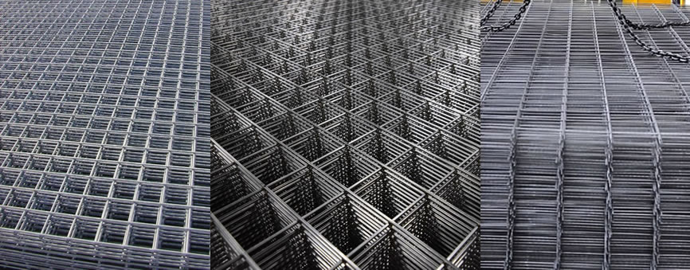

Son aceros al carbono destinados a la construcción en forma de Barras de 12 metros de longitud con características mecánicas dadas por el manejo de la composición química, fabricados por 2 de las acerías principales de la Argentina: Acerbrag y Acindar, quienes mediante procesos de laminado con equipos de alta tecnología logran estos productos de excelente calidad.Podes encontrarlo en todos sus diámetros desde los 6mm a 25mm.
Son barras de 4mm y 5,5 mm x 12mts de fabricación propia con materia prima de origen nacional hechas a partir de alambrón de acero Acerbrag y Acindar trefiladas y moleteadas bajo rigurosos controles de calidad.

Están formadas por barras de acero de 4mm o 5,5mm dispuestas en forma de cuadriculas y electro soldadas en todos sus puntos de encuentro, fabricadas en nuestras instalaciones cuentan con una superficie de 5mts x 2mts con cuadricula interna de 15cm x 15cm o 15cm x 25cm.
Son fabricadas por Acindar o Acerbrag a partir de hierros de 6mm, 8mm o 10mm; estas mallas de resistencia ejemplar son utilizadas para grandes obras de infraestructura, o para construcciones de alta resistencia. Cuentan con una superficie de uso de 6mts x 2.40 mts y cuadricula interna de 15cm x 15cm.
Es un alambre de acero de medidas 12, 14 y 16mm bañado en zinc para una mayor protección frente a factores externos como el óxido. su presentación es en bobinas de 50kg o rollos fraccionados de 1kg.
Es un alambre trefilado fabricado con acero de bajo carbono y con tratamiento térmico de recocido haciéndolo más dúctil y dándole su característico color negro. Especial para ataduras y fijación de barras de hierro, en armaduras de hormigón armado, ataduras en general, embalajes, ETC. Se comercializa en bobinas de 500kg, a granel o fraccionado en rollos de 50kg, 1kg o 900grs.
De propia fabricación, son clavos cuya cabeza plana y relieve a rayas lo convierte en una pieza Ideal para trabajos de encofrado, machimbres y maderas en general.
Medidas de longitud disponible de 1,5”, 2”, 2,5”, 3”, 4” y 5”. se comercializa a granel por kg o en cajas que contienen 16 bolsas de 1kg c/u, para su cómoda distribución en obras y ferreterías.
Ideal para maderas duras y postes de gran tamaño, su cuerpo robusto y de forma espiralada da una sujeción mucho mayor que los clavos de cuerpo liso. de fabricación propia, se encuentran en medidas de 2”, 2,5”, 3” y 4” fraccionados en cajas que contienen 16 bolsas de 1kg c/u.
Clavos de industria argentina, de fabricacion propia, utilizados mayormente para sujeción de chapas, su cabeza de plomo maleable se ajusta al contorno de la superficie para sellar cualquier posible filtración. Se comercializan en cajas que contienen 20 bolsas de clavos con 100 unidades c/u en sus medidas de 2.5”, 3” y 4”.